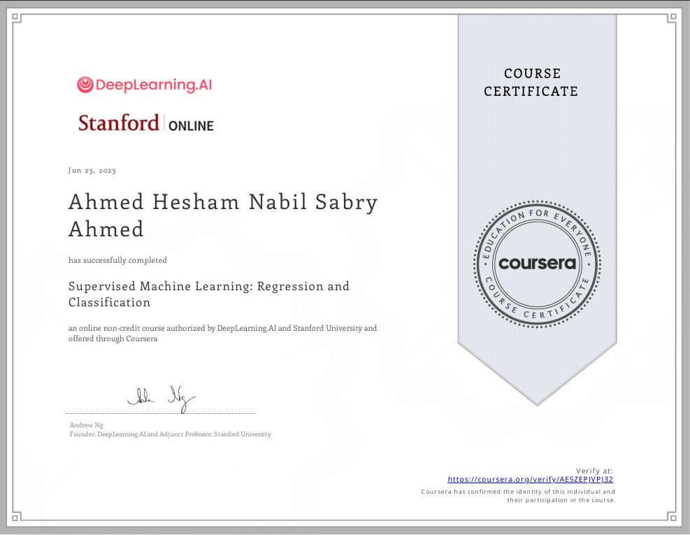

Certifications
AWS Certified Cloud Practitioner
Amazon Web Services · In Progress (2025)
Amazon Web Services · In Progress (2025)
Google Data Analytics Professional Certificate
Coursera · 2025
Coursera · 2025

Supervised Machine Learning: Regression and Classification
Stanford Online · 2023
Stanford Online · 2023